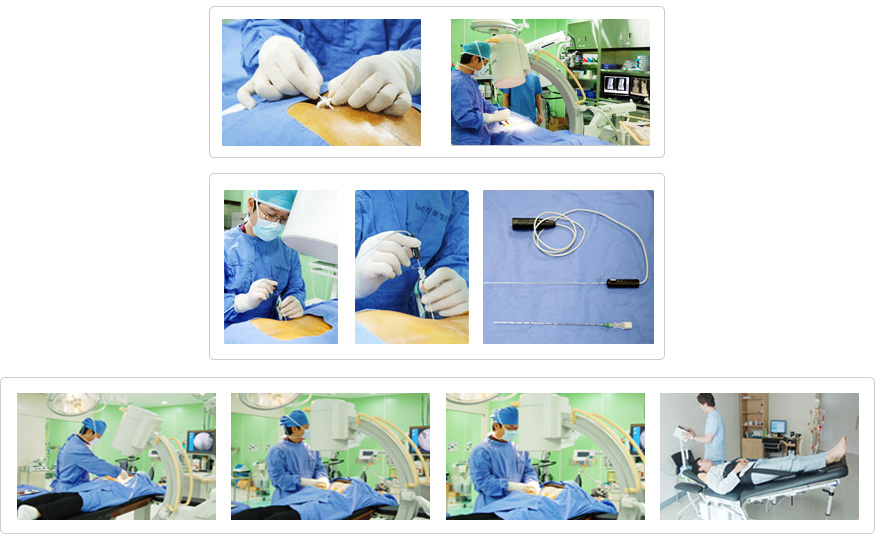

90 percent of spinal diseasesare curable without surgical procedures
- Four-zero nerve linear surgery(Navi)
The four- zero navi surgery inserts a 2mm catheter into the tail bone canal to gain approach to the diseased area. Tissues are removedwhich
compresses normal tissue. Navisurgery generates little normal tissue damage and a fast recovery. It is also adequate to spinal disc, neck disc,
spinal stenosis patients and even women who are afraid of the scars from surgery because of the affect that it will have on their beauty.
Patients can return to normal daily activities after the surgery.
- FIMStherapy for disc and adhesion treatment
FIMS therapyin combination with the C-arm is an efficient way to cure nerve synechia and inflammation. It widens the narrowed gap between
discs and separatesdiscs from the nerve with a special needle.
- RF nucleus pulposus decompression with one push
This new technique inserts an RF needle into a diseased disc and covers fractured tissue. After that, it applies around 50 calcium degrees of
RF thermal heat to the zone for 5-10 minutes. In turn, it alleviates pain by curing abnormal nerves and fractured tissue and reconstructs some
discs by contracting them.
- Extradural nerve block surgery for repeated chronic neck and back pain
Nerve block surgery usually involvesone injection. However, in some cases a thin tube is inserted into the extradural space and drugs are
continuously injected.
- 3D Active Trac
A lot of patients are afraid of surgery and side effects. However, 3D Active Trac is a non-surgical treatment that ensures safetyand that is painless and
successful. It is an accurate 3-D disc treatment that controls the negative pressure between discs and correctsthe pelvis.
- Cases calling for 3D Active Tractreatment
Herniated back and neck disc, degenerative disc, spinal stenosis, Sciatic neuralgia, acute/chronic back pains, facet syndrome and spine/pelvis revision
